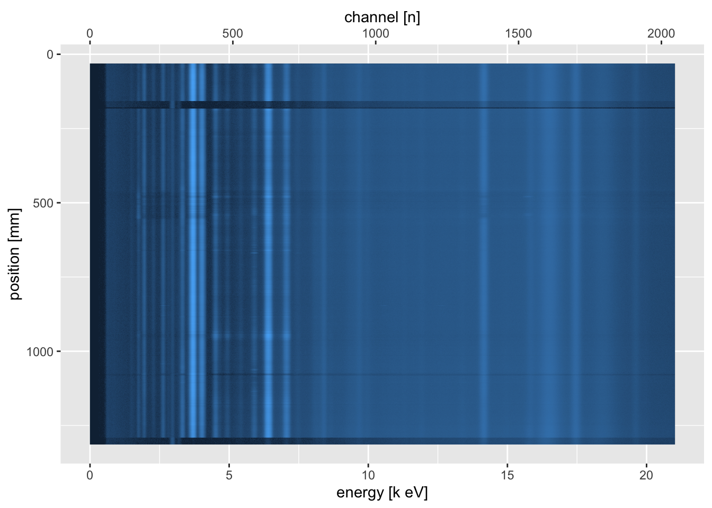
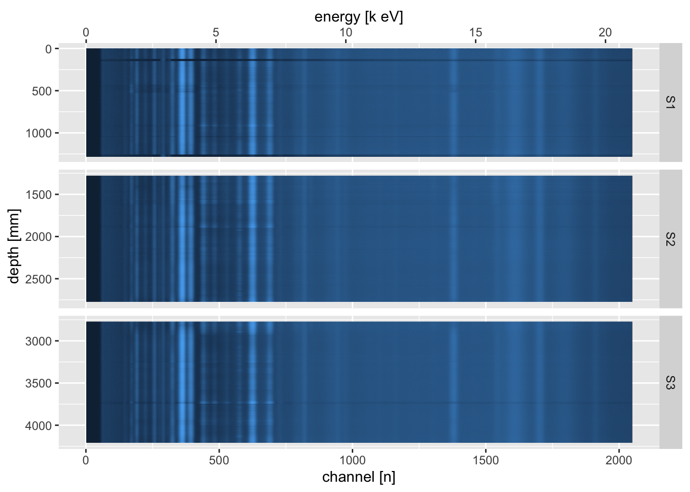

3.12 Visualising Raw Data
A useful tool for investigating areas of high errors or other problems in the scan data is to visualise the raw spectral data. This shows a heat map of the spectra, and can be used to identify areas where particular spectral lines appear and disappear along the core. At its simplest, it can be used to produce a plot of a single scan section.

By combining all of the sections, and joining the raw spectral data with the processed data from the Results.txt Q-Spec output file, it can be used as a very powerful diagnostic tool.
spectra_join <- function(xrf_data = CD166_19_S1$xrf,
spe_path = "CD166_19_S1/CD166_19_S1/XRF data/",
label = "CD166_19_S1"){
xrf <- xrf_data %>%
select(depth, position, validity, filename) %>%
mutate(filename = filename %>%
str_split(pattern = "\\\\") %>%
sapply(., `[`, 7)
) %>%
mutate(label = as.factor(label))
spe <- itrax_restspectra(spe_path, plot = FALSE)
spectra <- left_join(xrf, spe, by = "filename") %>%
pivot_longer(cols = -c("depth", "position", "validity", "filename", "label"),
names_to = "energy",
values_to = "counts") %>%
mutate(energy = as.numeric(energy))
return(spectra)
}
bind_rows(spectra_join(xrf_data = CD166_19_S1$xrf,
spe_path = "CD166_19_S1/CD166_19_S1/XRF data/",
label = "CD166_19_S1"),
spectra_join(xrf_data = CD166_19_S2$xrf,
spe_path = "CD166_19_S2/CD166_19_S2/XRF data/",
label = "CD166_19_S2"),
spectra_join(xrf_data = CD166_19_S3$xrf,
spe_path = "CD166_19_S3/CD166_19_S3/XRF data/",
label = "CD166_19_S3")
) %>%
ggplot(aes(x = energy, y = depth, fill = counts)) +
geom_tile() +
scale_fill_gradient(name = "value",
trans = "pseudo_log",
low = "#132B43",
high = "#56B1F7",
labels = round) +
scale_y_reverse(breaks = seq(from = 0, to = max(CD166_19_xrf$depth), by = 500)) +
xlab("energy [k eV]") +
ylab("depth [mm]") +
guides(fill = FALSE) +
facet_grid(rows = vars(label),
scales = "free_y",
space = "free_y")